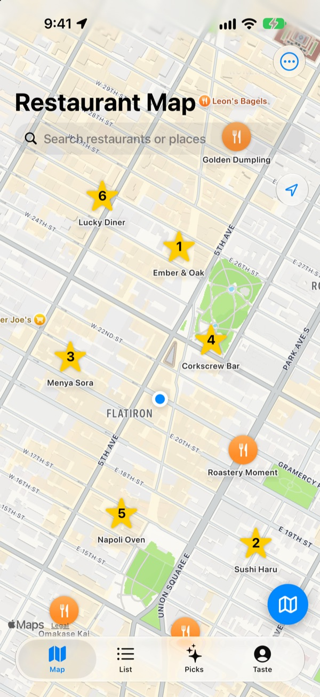
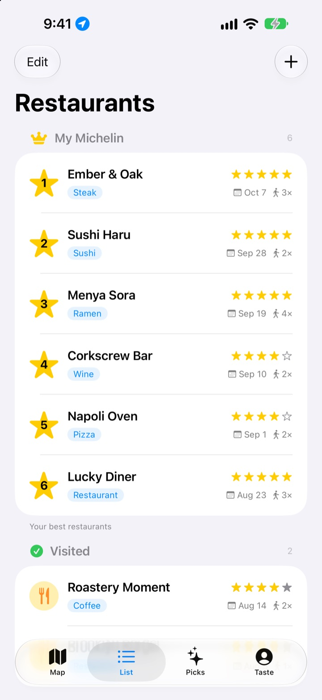
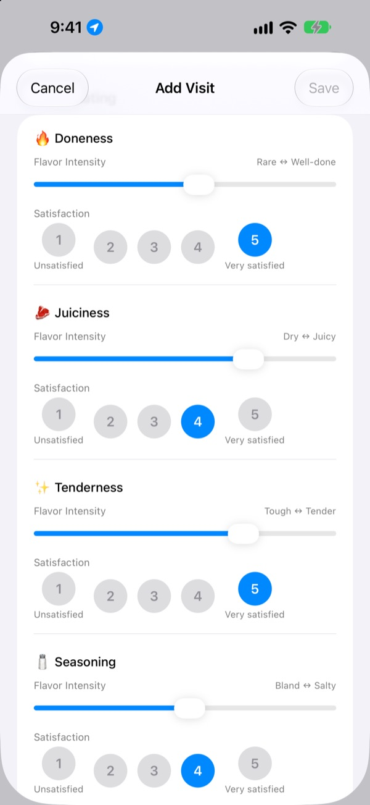
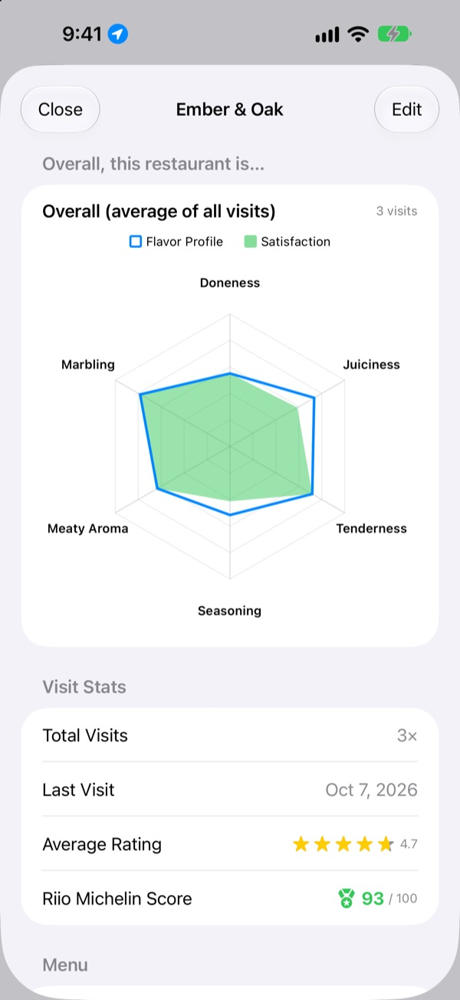

Never forget
a great meal again
Pin the restaurants you’ve been to and the ones you want to try, and log what you ordered, photos and how it tasted every time. When you can’t decide where to eat, your own notes have the answer.
Every feature is free. No sign-up, and your records stay on your iPhone.

Rate a dish
Pick a type of food, then set how strong each flavor was and how much you liked it. Same criteria and same math as a visit in the app.
That place was great, but what did I order?
You remember loving a restaurant, but the name is fuzzy, and what you ordered or whether the broth was too salty is gone completely. So you end up searching again and reading strangers’ reviews. Insaeng Matjip keeps what you actually tasted on a map, so your next pick comes from your own experience.
Visited, Want to Go, and your own Michelin
Search the map or tap a nearby place to save it in one go. Keep the places you’ve been apart from the ones you want to try, and rank your six favorites from 1 to 6.
When someone asks for a recommendation, just show them the list.

Questions that fit the food
Set how strong each flavor was, like heat or seasoning, with a slider, and rate separately from 1 to 5 how much you liked it. Steak asks about doneness and juiciness, sushi about the rice and the fish, ramen about the broth and the noodles.
Each visit also keeps the dish, photos, star rating and notes.

See which places are worth going back to
As visits add up, each restaurant shows an overall chart averaged across every visit, plus a Riio Michelin Score out of 100 that combines stars and satisfaction.
Leave a saved restaurant after a meal and a reminder to log it shows up a little later.

Three steps to start
- 1
Save a restaurant
Search the map or tap a nearby place to add it.
- 2
Log your visit
Add the dish, photos, stars and a taste rating. The rating is optional.
- 3
Pick your next meal
Check your Top 6 and scores, then get directions in Apple Maps, Kakao Map or Naver Map.
What you rate, by type of food
- 🍽️ General
- Spiciness, Boldness, Sweetness, Saltiness, Richness, Natural Flavor
- 🥩 Steak
- Doneness, Juiciness, Tenderness, Seasoning, Meaty Aroma, Marbling
- 🍣 Sushi
- Shari (Rice), Neta (Topping), Wasabi, Balance, Shaping, Temperature
- 🍜 Ramen
- Broth, Noodles, Chashu, Toppings, Temperature, Balance
- 🍕 Pizza
- Dough, Sauce, Cheese, Doneness, Toppings, Balance
- 🍷 Wine
- Body, Tannin, Acidity, Aroma, Finish, Balance
- ☕ Coffee
- Acidity, Body, Flavor, Aftertaste, Sweetness, Balance
Everything else is rated with the general set in the first row. You can also create your own food categories.
Frequently asked questions
How do I add a restaurant?
Type the restaurant’s name into the search bar at the top of the map, then tap “Add to My Restaurants” in the results. You can also tap a nearby place shown on the map to add it right away. If a place doesn’t show up in search, add it yourself at your current location or at a spot you pick on the map.
What are Visited, Want to Go and Top 6?
Visited: restaurants you’ve already been to. You can log your visits to them. Want to Go: restaurants you’d like to try someday. After you’ve been, switch it to Visited on the restaurant’s detail screen. Top 6 (My Michelin): rank your six favorite restaurants from 1st to 6th. Restaurants marked Want to Go can’t be added to your Top 6.
Do I have to rate the taste?
No, it’s optional. Rating it adds flavor profile and satisfaction to the restaurant’s overall chart and counts toward its Riio Michelin Score.
When does the “How was your visit today?” notification arrive?
If you stay near a saved restaurant for more than 5 minutes and then leave, the notification arrives about 40 minutes later. This feature needs location access set to “Always” and notifications turned on. If you’d rather not get these notifications, go to Settings > Apps > Insaeng Matjip and turn off notifications, or change location access to “While Using the App”. Location checks happen only on your device. Your movements are never stored or sent anywhere.
Can I use the app without allowing location access?
Yes. You can pick a spot on the map yourself to add and log restaurants. Only showing your current location and the after-visit notifications won’t be available.
Place search isn’t showing any results
Place search needs an internet connection. Try searching again with a different name or a shorter keyword. If it still doesn’t appear, you can pick a spot on the map and add it yourself.
Where is my log stored? Does it sync with my other devices?
Your restaurants, visit log and photos are all stored only on this iPhone. The current version doesn’t sync with other devices, and the iCloud backup and restore option in Settings doesn’t work yet. A full iPhone backup (iCloud Backup or a backup on your computer) does include the app’s data.
I want to erase everything
Open Settings from the map screen and tap “Delete All Data” to erase your restaurants and visit log. This can’t be undone, so please be careful. To remove your photos too, delete the app.
If I delete and reinstall the app, will my log still be there?
No. Because your log is stored only on your device, it’s erased along with the app. Please keep this in mind before deleting the app.
Is it really all free?
Yes. Every feature is free, with no ads and no account. Support the Developer in Settings is entirely optional and doesn’t unlock anything.
If your question isn’t answered above, send it straight from Settings > Support in the app, or email mizzking75@gmail.com. Including your app version, iPhone model, and which screen you were on and what you did helps us look into it faster.